В левой верхней части плана показаны крестьянские избы, стоявшие вдоль Калужской дороги (РГАДА)
Страницы авторов "Тёмного леса"
Литературный Кисловодск и окрестности
Пишите нам! temnyjles@narod.ru
|
| План Генерального межевания села Коньково. 1766 год. В левой верхней части плана показаны крестьянские избы, стоявшие вдоль Калужской дороги (РГАДА) |
Коньково, или Коньково-Троицкое, находилось к юго-западу от Москвы рядом с Калужской дорогой. Это - одно из мест, связанных с именем видного деятеля российского просвещения княгини Е.Р. Дашковой (1744-1810), поскольку усадьба принадлежала родственникам Екатерины Романовны Воронцовым, воспитывавшим ее в детстве.
Дядя Е.Р. Дашковой, вице-канцлер граф Михаил Илларионович Воронцов (1714-1767), участник дворцового переворота в пользу императрицы Елизаветы Петровны 25 ноября 1741 года, приобрел Коньково у графа Александра Гавриловича Головкина (1688-1760), долгое время бывшего посланником то в Берлине, то в Париже, то в Голландии, где он навсегда и остался. Первый раз М.И. Воронцов попытался купить Коньково в 1749 году, внушая владельцу мысль о ненадобности тому имения, которое дохода все равно никакого не приносит, а усадебные палаты "из фундамента великие трещины имеют и вновь перестройки требуют"{1}. Это позволяет предположить, что палаты строил еще отец Александра Гавриловича канцлер граф Гавриил Иванович Головкин (1660-1734){2}. В 1689 году Петр I пожаловал ему "из приказа розыскных дел" "половину сельца" - бывшей "деревни Степановской, Бесово тож", конфискованную у казненного боярина Андрея Ильича Безобразова (1614-1690). Вместе с владельцем другой половины сельца, братом А.И. Безобразова Федором Ильичем, Г.И. Головкин возводит в 1694 году деревянную Троицкую церковь, а к 1700 году выменивает у его сына и наследника, стольника Алексея Федоровича Безобразова, соседние земли{3}. В начале 1700-х годов за счет переселения сюда крестьян из других уездов образуется деревня, растянувшаяся вдоль Калужской дороги{4}. В 1704 году за Г.И. Головкиным значится "село Конково, а в селе церковь св. Троицы, да новоселенная деревня Конково, на Большой Калужской дороге, едучи с Москвы, на левой стороне, а в ней девять дворов крестьянских, а крестьяне переведены из разных его деревень Боровского и Каширского уездов"{5}.
Судя по тому, что название имения изменилось со Степановского на Коньково, новое строительство развернулось именно на этой пустоши, где уже стояла церковь. Работы окончательно завершились после смерти жены Г.И. Головкина Домны Андреевны, урожденной Дивовой (?-1707). В 1720-х годах деревянную Троицкую церковь заменили каменной{6}.

| Озайас Хамфри. Портрет княгини Е.Р. Дашковой. Холст, масло. 1770-е годы |
| 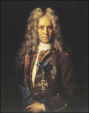 | И.Н. Никитин. Портрет Г.И. Головкина. Холст, масло. 1720-е годы |
| 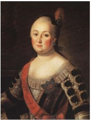 | А.П. Антропов. Портрет Анны Карловны Воронцовой. Холст, масло. 1763 год |
Таким образом, в Конькове, когда оно заинтересовало М.И. Воронцова, имелись деревня, церковь и усадьба - "двор помещиков с каменным строением", то есть двухэтажный каменный господский дом, близкий по стилю петровской архитектуре, с парадной двухмаршевой лестницей, ведущей на второй жилой этаж, и двумя анфиладами комнат вдоль торцовых частей здания в верхнем этаже. Дом проектировался в расчете на равноценное восприятие всех четырех фасадов, что выразилось в украшении каждого фронтонами. Получилась своеобразная "палладианская вилла" - творение, по всей вероятности, архитектора, знакомого с западноевропейским зодчеством, скорее всего иностранца. Ю.В. Ратомская на основании чертежа, выполненного неким "садовым учеником" Гаврилой Денисовым{7}, по стилистическим признакам датирует дом в Конькове 1710-1720-ми годами (не ранее 1704){8}, что не вызывает возражений.
Приведенное выше слишком критичное описание дома в письме М.И. Воронцова к А.Г. Головкину могло быть просто средством сбить продажную цену имения, которое М.И. Воронцов и приобрел в 1752 году после свадьбы с двоюродной сестрой императрицы Елизаветы Петровны Анной Карловной Скавронской (1723-1775): "Подмосковная вотчина графа А.Г. Головкина, село Троицкое, и Коньково тож, с деревней Дубинниково, от Москвы 11 верст по Калужской дороге. Церковь каменная с колокольнею. Палаты каменные, в них 10 покоев. Четыре сада с овощными (т.е. фруктовыми. - М.К.) деревьями. В селе прудок и одна небольшая мельница. Мужескаго пола душ 92 человека. <...> Крестьяне отправляют дворовую работу и платят по 50 рублей за год. <...> Оную деревню уступает граф Головкин по приятству (по дружбе. - М.К.) за 4000 ефимков"{9}. Судя по тому, что для Конькова тогда же были куплены белый камень и строительный лес, здесь сразу началось новое строительство. На Каменном ручье (Коньковском овраге) - притоке речки Чертановки - устроили каскад прудов (каменщикам и "прудовщикам" за работу выплачивается более сотни рублей), в господском доме ("палатах") переложили печи, заново его обставили (привозятся "столы и прочие домовые уборы"){10}. Тем самым есть серьезные основания полагать, что Воронцовы, а вместе с ними и Е.Р. Дашкова, постоянно жили в усадьбе.
Об этом свидетельствует и следующий факт. 18 июля 1756 года М.И. Воронцов в письме к И.И. Шувалову{11} сообщил: при установлении точной границы между Коньковым и селом Узким якобы обнаружилось, что значительная часть территории, принадлежавшей к Узкому, в том числе участок, на котором находилась узковская церковь, должна относиться к Конькову: "Действительно от межевщиков найдено, что церковь, часть поля с садами и деревня поселена на Кон[ь]ковской земле; чрез сей случай я ласкаю себя иметь удовольство вас соседом видеть, понеже князь Б.В. [Голицын] должен будет свое село Уское продать за резонабельную цену, и я прошу вашего превосходительства не упустить сию оказию и оную деревню купить, а я с охотою принадлежащую к тому землю вам уступлю, а не кому другому"{12}. Однако следует думать, что поскольку И.И. Шувалову не суждено было стать владельцем Узкого, земельный вопрос решился в пользу Б.В. Голицына: спорная земля с церковью и крестьянскими избами показана входящей в состав Узкого на его наиболее раннем известном плане - чертеже "Генерального межевания" 1766 года{13}. Во всяком случае, ничто не препятствует предположить, что какие-то связи между Воронцовыми и Голицыными, пусть не слишком дружественные, существовали, и Узкое - одно из тех мест, где также могла бывать Е.Р. Дашкова.
После переворота 1762 года и восшествия на престол Екатерины II, возможно, именно в Конькове жила сестра Е.Р. Дашковой Елизавета Романовна - бывшая возлюбленная императора Петра III: ей запретили приезжать в Москву{14}. Владелец Конькова М.И. Воронцов отказался присягать Екатерине II, пока был жив Петр III; тем не менее, он участвовал в ее коронации и сохранил пост канцлера до 1765 года.
Одной из достопримечательностей Конькова времен Воронцовых являлся зверинец, в котором на достаточно большой территории содержались экзотические звери, а также звери, предназначавшиеся для охоты. Судить о составе "населения" зверинца можно только по отрывочным данным. В июле 1765 года "Московские ведомости" напечатали объявление: "В подмосковной вотчине его сиятельства канцлера Михаила Ларионовича Воронцова с. Конькове по Калужской дороге, расстоянием от Москвы 11 верст, продаются за умеренную цену американские козы и большие немецкие олени"{15}. Надо полагать, в зверинце жили и лебеди, о чем свидетельствует название находившегося на его территории оврага - Лебяжий, в верховьях которого на плане Генерального межевания Конькова-Троицкого 1766 года показан пруд (не сохранился){16}. Зверинец, кстати, имелся и в калужском имении Дашковых Троицкое, где жила Е.Р. Дашкова. Ее муж, князь Михаил Иванович Дашков (1736-1764) в письме к М.И. Воронцову от 22 июля 1759 года сообщал, что в Троицком строится зверинец и уже почти готов вольер для фазанов{17}. Скорее всего, фазаны были и в Конькове.
| 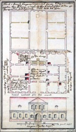 | План и фасад дома в усадьбе Коньково. 1766 год (ГНИМА имени А.В. Щусева) |
Обветшавший коньковский господский дом, судя по надписи на его чертеже из собрания ГНИМА имени А.В. Щусева, обследовавший его в 1766 году архитектор рекомендовал "почти до фундамента разбирать"{18}. Однако непонятно, успели ли это сделать М.И. и А.К. Воронцовы, поскольку владелец Конькова скончался в феврале 1767 года{19}. Его вдова, унаследовавшая Коньково и решившая с ним расстаться, постепенно стала распродавать имущество. Так, в "Московских ведомостях" она поместила объявление о продаже башенных "боевых часов"{20} с колокольни коньковской Троицкой церкви. В свое время их, "самые простые и обыкновенные колокольные часы без всяких украшений и битья куранту, разумеется, кроме четвертей и часов, какие во многих деревнях Германии, Голландии, Франции и Англии находятся"{21}, заказал в Лондоне племянник М.И. Воронцова граф Александр Романович Воронцов (1741-1805), впоследствии также ставший канцлером.
В том же 1767 году Коньково у А.К. Воронцовой купила Авдотья (Евдокия) Наумовна Зиновьева (1717-1773). Ее муж, петербургский обер-комендант генерал-поручик Николай Иванович Зиновьев (?-1773) через два года приобрел граничившую с Коньковом и Узким пустошь Дубинкино (или Дубинкинский лес), изначально принадлежавшую к Конькову, но, видимо, проданную кем-то из предыдущих владельцев{22}. Супруги печально прославились своим жестоким обращением с крепостными, называвшими А.Н. Зиновьеву "Наумихой"; память о суровости этих бар переходила из поколения в поколение{23}.
Дальнейшая история Конькова преимущественно связана с двумя сюжетами. Первый - строительство дворца Екатерины II, которая в 1776 году купила Коньково у дочери Зиновьевых Екатерины (Иулиании) Николаевны Зиновьевой (1758-1781), вышедшей замуж за бывшего фаворита императрицы и своего двоюродного брата графа Григория Григорьевича Орлова (1734-1783). Портреты Е.Н. Орловой писали Д.Г. Левицкий и Ф.С. Рокотов. Г.Р. Державин воспел ее в стихах: "Как ангел красоты, являемый с небес, приятностью лица и разумом блистала". Жизнь молодой графини пресеклась очень рано. Муж искренне оплакивал потерю до конца своих дней.
| 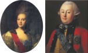 | Ф.С. Рокотов. Портрет Е.Н. Орловой. Холст, масло. 1779 год К.-Л. Христенек. Портрет князя Г.Г. Орлова. Холст, масло. 1768 год |
При Екатерине II в административном отношении Коньково было подчинено царицынскому управляющему В.Я. Карачинскому{24}. В декабре 1776 года он "осмелился перевесть к ранжерее в село Царицыно"{25} двух садовников из Конькова. В августе 1777-го им определили жалование, поскольку В.Я. Карачинский "по бедности" содержал садовников "кое-как на самом малом пропитании"{26}. Во всяком случае, наличие последних в усадьбе говорит о развитом садовом и, видимо, оранжерейном хозяйстве, оставшемся от Зиновьевых.
Существовавший в Конькове каменный дом в "Экономических примечаниях к планам дач Генерального межевания" назван именно домом, а не дворцом. Это показывает, что царица никогда не жила здесь{27}. Тем не менее, едва ли новое строительство в Конькове могло начаться без личного осмотра ею местности.
По легенде, опубликованной историком Д.О. Шеппингом, Екатерина II после своего посещения усадьбы, якобы имевшего место в 1776 году, приказала разобрать старый господский дом Зиновьевых и перенести его в Царицыно для размещения в нем Управления дворцовой волости. По мнению краеведа И.Н. Сергеева, он сохранился до настоящего времени (Дольская улица, 10){28}. Однако реально каменное здание не могло быть никуда перенесено, поэтому даже если допустить, что дом на Дольской улице имеет "коньковское" происхождение, мы имеем дело в лучшем случае с одним из флигелей. К сожалению, реконструкция под ресторан "Усадьба" в 1990-х годах, в ходе которой дом по существу построили заново, лишил его исторической ценности и возможности провести исследования. До реконструкции же это был обычный деревянный дом с мезонином, типичный для "послепожарной" Москвы{29}.
К екатерининскому времени относятся несколько проектов дворцового комплекса для Конькова, который так же, как Царицыно и менее известное Булатниково (Московская область), должен был стать одной из летних резиденций императрицы. Поскольку все проекты коньковского дворца находились в составе "Казаковских альбомов", их первый публикатор И.Е. Бондаренко не удержался от соблазна посчитать единственным проектировщиком комплекса в Конькове М.Ф. Казакова{30}. Впоследствии И.Э. Грабарь выдвинул гипотезу об авторстве В.И. Баженова{31}, подтвержденную А.И. Михайловым{32}.
| 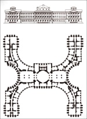 | В.И. Баженов. Проект дворца в Конькове (не осуществлен). 1783-1784 годы (ГНИМА имени А.В. Щусева) |
| 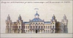 | М.Ф. Казаков. Проект "готического" дворца в Конькове (не осуществлен). 1793 год. (ГНИМА имени А.В. Щусева) |
| 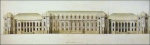 | П. Куричинин. Проект перестройки Петровского подъездного дворца. 1830-е годы. (РГАДА) |
На сегодняшний день проблема авторства дворца в Конькове выглядит следующим образом. Первый проект был выполнен В.И. Баженовым в 1783-1784 годах. План трехэтажного в своей основной части здания представлял собой двухсторонний разворот больших полуокружностей переднего и заднего фасадов, а также двух малых полуокружностей на торцах. Аналогичную идею содержал первоначальный проект Казанского собора в Петербурге А.Н. Воронихина, как известно, реализованный лишь частично. В письме А.А. Безбородко от 14 ноября 1784 года В.И. Баженов сообщал: "И на Коньково готовлю"{33}. Сохранилась безымянная недатированная записка (видимо, В.Я. Карачинского) о коньковском дворце: "В селе <...> на строение дворца повелено зделать план, которой господином Баженовым и зделан и от меня с ним для поднесения отправлен, то не повелено ль будет оной взяв от Баженова рассмотреть"{34}. Судя по помете на ней ("Решено февраля 1785"), проект был представлен императрице и, очевидно, одобрен. Но после разборки баженовских построек в Царицыне зодчий в царствование Екатерины II дворцами уже не занимался.
В 1793 году М.Ф. Казаков разработал два новых проекта дворца для Конькова: "готический" в виде пятиугольного в плане стилизованного "замка" (к нему очень близок один из проектов перестройки Петровского подъездного дворца в Москве, составленный П. Куричининым ориентировочно в 1830-х годах{35}) и принятый к реализации "классический" - по сути, сильно увеличенный помещичий дом{36}. При Екатерине II успели заложить полуподвальный этаж со сводами и начать возведение деревянного этажа. Смерть императрицы остановила работы, а Павел I намеренно не окончил ни одного начатого матерью строительства{37}.
В 1803 году по поручению Экспедиции кремлевского строения архитектор И.В. Еготов обследовал коньковский и булатниковский дворцы. В Конькове он обнаружил, что недостроенный дворец вместе с сооруженными рядом подсобными зданиями обветшал и превратился в руины, не подлежавшие восстановлению, за исключением "каменного корпуса", который можно приспособить для размещения причта местной церкви. Очень любопытным в рапорте Еготова представляется упоминание и наличие плана конного двора. Известно, что М.Ф. Казаков выполнил для этой усадьбы проекты огромных конных дворов, однако они традиционно считались нереализованными{38}. Оказалось, конный двор в Конькове по одному из казаковских проектов все же был сооружен, хотя, видимо, не в полном объеме{39}. На основании рапорта И.В. Еготова в том же году Экспедиция кремлевского строения продала дворец, конный двор с сараем и деревянной избою, а также "остаток погреба" на снос. С торгов на аукционе их приобрел крепостной крестьянин подмосковного села Выхино, принадлежавшего графу Н.П. Шереметеву, Михаил Карташев, который вскоре разобрал все эти постройки{40}.
Помимо перечисленного, в Конькове были оранжереи. И.В. Еготов о них ничего не пишет, но в его функции явно не входило обследование оранжерейного хозяйства, наличие которого подтверждается многочисленными документами.
Скорее всего, коньковские оранжереи в основном проектировались В.И. Баженовым или М.Ф. Казаковым, однако они могли включать те, что остались от Зиновьевых. К 1802 году, когда все московские и подмосковные дворцовые сады перешли в ведение Экспедиции кремлевского строения, оранжереи в Конькове значатся как действующие, причем, судя по всему, существующие достаточно давно: "Как в Царицынских, так и в Кон[ь]ковских оранжереях большое количество дерев, помещающееся с трудностью в оных, так что даже по утеснении приносят вред не только самим деревьям, но и в произращениях делаются препятствия"{41}. Тогда от продажи цветов, фруктов и деревьев из этих оранжерей удалось выручить 910 рублей 14 копеек, а в следующем, 1803 году - 799 рублей 10 копеек{42}.
Всем этим хозяйством с 1804 года заведовал садовый мастер прусский подданный Карл Сигизмунд Унгебауер, ранее работавший в подмосковной усадьбе бригадира Н.А. Дурасова Люблино{43}. В 1809 году "Царицынские и Кон[ь]ковские оранжереи по искусству и способностям <...> препоручены <...> садовым подмастерьям Ивану Селуянову и Николаю Ильину"{44}. После наполеоновского нашествия коньковские оранжереи не возобновлялись.
Церковь, значительно пострадавшая при отступлении французов из Москвы по Калужской дороге и закрытая в 1813 году, с тех пор пустовала, ветшая и разрушаясь. Впоследствии (1821) ее разобрали по инициативе священника села Сергиевского Д.Я. Воздвиженского, которому понадобился материал на ограду своего храма. Необходимость скорейшей разборки священнослужитель мотивировал тем, что "означенная Троицкая церковь уже совершенно обрушилась, как верх с главою, так и потолки провалились"{45}, и что желающих разжиться материалом немало найдется и помимо него. Действительно, подобный опыт у коньковских крестьян имелся: судя по фотографиям, даже в советское время часть крестьянских изб стояла на кирпичных и белокаменных цоколях, материал для которых явно добывался из остатков дворца или прилежавших к нему построек; отдельные избы были целиком сложены из кирпича!
Переходим ко второму сюжету, связанному с Коньковым. До ликвидации этого населенного пункта здесь, прямо у Калужской дороги, находился высокий барочный белокаменный обелиск. Существовал проект его сохранения вместе с несколькими наиболее интересными коньковскими избами и расположенной по другую сторону дороги церковью села Сергиевского как элементов исторической среды. К сожалению, проект реализовать не удалось, избы снесли, а обелиск, оказавшийся на территории строительства многоквартирного жилого дома, в 1972 году передали Музею архитектуры имени А.В. Щусева и перевезли в Донской монастырь.
| 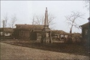 | Обелиск в Конькове. Фотография А.Т. Лебедева. 1935 год (ГНИМА имени А.В. Щусева) |
Обелиск, как и подавляющее большинство подобных памятников, не имеет надписей, рассказывающих о конкретном поводе его установки. "Такие же чисто декоративные сооружения служат часто и украшениями парков, верстовыми столбами, фонтанами, виньетками и т.д. Такой памятник невольно станет интимным, понятным только тому, кто поставил его в ознаменование какого-нибудь радостного или печального события своей жизни"{46}.
Москвовед М.И. Александровский предполагал, что коньковский обелиск - один из четырех, украшавших Яузский мост, существовавший в 1805-1876 годах{47}. Однако по форме он существенно отличается от обелисков Яузского моста, кроме того, есть сведения о том, что он находился в Конькове задолго до 1876 года.
Еще одна достаточно распространенная в краеведческой литературе версия: обелиск воздвигли местные крестьяне в честь приезда Екатерины II. Краеведов не смущает, что установка обелисков для крестьян XVIII века - занятие вообще-то странное и прецедентов не имеющее. Идея отмечать августейшие посещения усадеб различного рода мемориальными сооружениями характерна для владельцев этих усадеб, но в данном случае владелицей являлась сама императрица, поэтому крайне сомнительно, чтобы она распорядилась поставить памятник своему приезду в Коньково, во всяком случае, ни в одной другой из принадлежавших ей усадеб она так не поступала.
Приведенные соображения сразу же делают сомнительной связь обелиска с именем Екатерины II. Тем не менее, местные крестьяне вполне могли поднести у его подножия хлеб-соль своей царственной помещице, которая 3 июля 1787 года перевела их с барщины на оброк, отправив следующее письмо московскому главнокомандующему П.Д. Еропкину: "Петр Дмитриевич. По представлениям вашим повелеваем: 1) село Всехсвятское, не включая в число дворцовых, поручить оное в ведомство надворного советника [В.Я.] Карачинского{48} на таком основании, как состоят села Царицыно и Кон[ь]ково, крестьян тамошних обложить оброком по три рубля с души с накладными по две копейки на рубль, каковой оброк положить и на крестьян Царицынских и Кон[ь]ковских вместо работ, от которых их уволить"{49}.
В конце XIX века историк И.Ф. Токмаков записал свидетельство генерал-майора В.П. Толстого: "По рассказу графа Владимира Петровича Толстого, помещика села Ускова, расположенного от села Конькова в расстоянии менее 2-х в[ерст], он в своем детстве помнит еще церковь и развалины дома с. Конькова, который назывался царским дворцом, и передавал, что это имение было куплено Императрицею Екатериною вследствие просьбы крестьян на жестокое обращение с ними помещицы, и в память их освобождения воздвигнут в с. Конькове каменный столб, который и теперь стоит на том самом месте, где Императрица Екатерина приняла прошение крестьян"{50}. Отметим, что В.П. Толстой родился в 1802 году, так что его детство на момент записи было временем достаточно отдаленным.
| 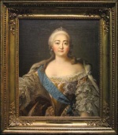 | Неизвестный художник. Копия с Токке. Портрет императрицы Елизаветы Петровны. Холст, масло. XVIII век |
Конечно, переход Конькова от Зиновьевых к императрице означал существенное облегчение положения крестьян, ведь Зиновьевы оставили по себе славу жестоких помещиков (см. выше). Еще в 1923 году местный старожил рассказывал посетившему Коньково художнику А.М. Васнецову: "При Екатерине II здесь был помещик Зиновьев, гроза крестьян, какой-то маньяк, настроивший бастионы, выкопавший рвы, выложивший пруд белым камнем, наставивший здесь пушек. Он измучил людей работой, мечтал пруды соединить с Москвою-рекою. На него жаловались царице, она его укротила"{51}.
Как и во всех легендах, у рассказчика вымысел причудливо переплетается с реальностью. Строительные работы в имении действительно велись: при Зиновьевых в Конькове упоминается господский дом, причем нет никаких указаний на его ветхость - видимо, он был возведен заново. Согласно плану Генерального межевания (1766){52}, пруды в Конькове существовали уже при Воронцовых: на нем показан каскад из шести прудов (сохранилось два), юго-западнее находились два также не дошедших до нас пруда, в том числе упоминавшийся выше пруд на Лебяжьем овраге. Но из-за дальности расстояния связать коньковские пруды с рекой Москвой невозможно даже сейчас. Сведения же о пушках и бастионах ни подтвердить, ни опровергнуть пока не представляется возможным. Известно, что М.И. Воронцов в 1760 году привез десять артиллерийских орудий в село Кимры - тверское имение своей жены. Может быть, и коньковские пушки, если они были, появились благодаря ему{53}?
Первая серьезная попытка выяснить, по какому случаю поставлен обелиск в Конькове, относится к 1882 году. К тому времени обелиск обветшал и покосился, что вызвало обеспокоенность местных властей, информировавших об этом Московское губернское правление: "Препровождая при сем в подлиннике докладную записку пристава 5 стана за N32/7 об угрожающей опасности, могущей произойти от падения памятника, пришедшего от времени в ветхость, имею честь просить Губернское правление разрешить привести материал памятника в форму неугрожающую падением; т.е. разобрать оный и сложить в кучи"{54}. Разобрать обелиск не разрешили на основании статьи Строительного устава, запрещавшей уничтожение древностей. Дело дошло до Сената. На разных этапах его рассмотрения предпринимались попытки прояснить повод установки обелиска. Поиски соответствующих документов в государственных архивах оказались тщетными, что косвенно опровергает "освобожденческую" гипотезу: в этом случае должны были бы найтись записи об изготовлении обелиска, уплате денег за него и за перевозку, установке в Конькове и так далее. Но, повторяем, ничего подобного не обнаружилось, лишь со слов местных жителей была зафиксирована уже изложенная нами версия, воспроизводимая краеведами до сего дня.
Чтобы решить задачу, мы обратились к исследованию самого обелиска. Ярко выраженная барочная стилистика памятника кажется архаичной для 1780-х годов. Поэтому логичнее представлялось отнести его к более раннему периоду, хотя, казалось бы, в доекатерининской истории Конькова значимых событий, заслуживающих обелиска, не происходило. Однако детальное изучение истории Конькова выявило такое событие: 21 сентября 1753 года М.И. Воронцов принял здесь императрицу Елизавету Петровну и ее свиту (с достаточным основанием можно считать вероятным присутствие при сем Е.Р. Дашковой, биографы которой считают, что она тогда жила в Конькове вместе с семьей М.И. Воронцова). Вот запись в камер-фурьерском журнале под указанной датой: "После обеденного кушания Ее императорское величество с некоторыми придворными кавалерами и знатными особами изволила ездить с псовою охотою от Воробьевых гор полями; а вечернее кушание изволила кушать от Москвы в 12 верстах у графа Михаила Ларионовича Воронцова"{55}. Тут уже впору ставить обелиск. Со временем его значение забылось, и подлинную историю заменили легенды. К рождению одной из них "приложил руку" поэт С.И. Кирсанов, писавший в поэме "Калужское шоссе":
То есть обелиск рассматривался как памятник коню Екатерины II, якобы павшему во время приезда в усадьбу императрицы - отсюда, мол, и название населенного пункта, хотя оно явно носит антропонимический характер и восходит к прозвищу одного из первых владельцев, документальные сведения о котором до нас не дошли. Впервые это название упоминается задолго до екатерининской эпохи - в 1617 году. Тогда подмосковная пустошь "Конково, а Холзиково тож, по обе стороны врага{57}, и пустошь Гаврилково, Дубинкино тож на враге"{58}, а также соседняя "деревня Степановская, Емелинское, а Бесово тож, на вражке, по обе стороны вверх речки Городенки{59}, а в ней живут деловые люди 2 двора"{60}, была пожалована стольникам братьям Илье и Василию Кузьмичам Безобразовым.
Поэтому изложенную выше "поэтическую" версию не стоит воспринимать всерьез. Тем не менее, на флаге и гербе муниципального образования Коньково, в состав которого вошла территория бывшей усадьбы, мы видим серебряного коня, императорскую корону и золотую подкову{61}.
Сильно разросшееся село Коньково снесли в 1971-1972 годах. На его землях и землях соседней деревни Деревлево вырос многоэтажный жилой массив Коньково-Деревлево. Кроме обелиска, от усадьбы сохранились только два пруда, называющиеся Коньковскими - Верхний (Малый) и Нижний (Большой), расположенные на улице Введенского у домов 26, 28 и 30.
| 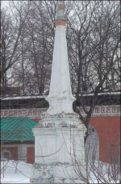 | Коньковский обелиск на территории Донского монастыря. Фотография автора. 2011 год |
На сегодняшний день коньковский обелиск - единственная реликвия "дашковского" Конькова, что увеличивает его мемориальную ценность (кстати, если считать обелиск созданным в елизаветинскую эпоху, то он оказывается ныне самым старым монументом на территории Москвы). Существует идея создания копии обелиска для установки в районе бывшей церкви села Сергиевского. После реализации этого проекта новый обелиск может перестать быть безымянным, превратившись в памятник Е.Р. Дашковой, которого, по мнению многих, явно не хватает Москве.
| 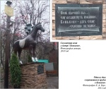 |
| 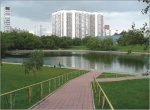 |
{1} Из переписки графа М.И. Воронцова с графом А.Г. Головкиным // Архив князя Воронцова. Кн. 3. М., 1871. С. 660.
{2} Токмаков И.Ф. Историко-статистическое и археологическое описание церкви во имя преподобного Сергия, Радонежского чудотворца, в селе Сергиевском, Конькове тож (Московской губернии и уезда) с приходом. М., 1895 . С. 7-8.
{3} Там же.
{4} Там же. С. 8-9; Холмогоровы В.И. и Г.И. Исторические материалы о церквах и селах XVI-XVIII столетия. Вып. 8. Пехрянская десятина (Московского уезда). М., 1892. С. 160; Шеппинг Д.О. Древний Сосенский стан Московского уезда. М., 1895. С. 12.
{5} Холмогоровы В.И. и Г.И. Указ. соч. С. 160.
{6} Коробко М.Ю. Коньково-Троицкое // Усадебное ожерелье Юго-Запада Москвы. М., 1996. С. 92.
{7} ГНИМА им. А.В. Щусева. Инв. NР1-377.
{8} Ратомская Ю.В. О доме петровского времени в подмосковной усадьбе Коньково // Филевские чтения. Тезисы шестой научной конференции 20-23 декабря 1999 г. М., 1999.
{9} Шеппинг Д.О. Указ. соч. С. 11-12.
{10} Веселая Г.А., Фирсова Е.Н. Москва в судьбе княгини Дашковой. М., 2002. С. 110.
{11} Шувалов Иван Иванович (1727-1797) - видный деятель российского просвещения, с 1749 г. фаворит императрицы Елизаветы Петровны, дипломат, генерал-адъютант, член конференции (Государственного совета), был покровителем М.В. Ломоносова, основателем и первым куратором Московского университета, основателем и первым президентом Академии художеств.
{12} Письма графа М.И. Воронцова к И.И. Шувалову // Русский архив. 1864. N3. С. 287.
{13} РГАДА.Ф. 1354, оп. 256, д. 3 "У", "С".
{14} Веселая Г.А., Фирсова Е.Н. Указ. соч. С. 48.
{15} Цит. по: Веселая Г.А., Фирсова Е.Н. Указ. соч. С. 109.
{16} Коробко М.Ю. Коньково-Троицкое // Усадебное ожерелье Юго-Запада Москвы. Изд. 3-е, испр. М.-СПб., 1997. С. 130.
{17} Веселая Г.А., Фирсова Е.Н. Указ. соч. С. 18.
{18} ГНИМА им. А.В. Щусева. Инв. NР1-377.
{19} М.И. Воронцов был похоронен в несохранившейся церкви Воздвижения Креста Господня в Москве на Воздвиженке, в приделе свт. Николая чудотворца (см.: Надгробная надпись графу М.Л. Воронцову // Архив князя Воронцова. Кн. 7. М., 1875. С. 652).
{20} Веселая Г.А., Фирсова Е.Н. Указ. соч. С.110.
{21} Письма графа М.И. Воронцова к племеннику его графу Александру Романовичу Воронцову / Архив князя Воронцова. Кн. 5. М., 1872. С. 109.
{22} Коробко М.Ю. Коньково-Троицкое // Усадебное ожерелье Юго-Запада Москвы. Изд. 3-е, испр. М.-СПб., 1997. С. 126.
{23} Токмаков И.Ф. Указ. соч. С. 9; Холмогоровы В.И. и Г.И. Указ. соч. С. 160; Шеппинг Д.О. Указ. соч. С. 11-12; Он же. Поместье Салтычихи / Русский архив. 1871. N7-8. Ст. 1285.
{24} Карачинский Василий Яковлевич (175?-1792) - майор.
{25} РГАДА.Ф. 14, д. 243, л. 7.
{26} Там же. Л. 10 об.
{27} ЦИАМ.Ф. 184, оп. 10, д. 2469, л. 51 об.; Из переписки графа М.И. Воронцова с графом А.Г. Головкиным. С. 660-661; Шеппинг Д.О. Указ. соч. С. 13.
{28} Сергеев И.Н. Царицыно. Страницы истории. М., 1993. С. 80-83. См. также интерпретацию этой легенды Н.М. Молевой ( Молева Н.М. Древняя быль новых кварталов. М., 1982. С. 45, 59).
{29} После революции в нем размещался волостной совет (первоначально Царицынский, с 1918 г. Ленинский). В 1918-1925 гг. советом руководил поэт Ф.С. Шкулев, поэтому впоследствии на доме установили мемориальную доску с надписью: "Здесь жил автор песни "Мы кузнецы" Ф. Шкулев" (не сохранилась). В 1980-х гг. в здании находилась воинская часть.
{30} Бондаренко И.Е. Подмосковные дворцы XVIII века // Старые годы. 1911. N3. С. 20.
{31} Грабарь И.Э. В поисках неизвестных построек В.И. Баженова // Неизвестные и предполагаемые постройки В.И. Баженова. М., 1951. С. 134.
{32} Михайлов А.И. Баженов. М., 1951. С. 162164.
{33} Баженов Василий Иванович. Письма. Пояснения к проектам. Свидетельства современников. Биографические документы. М., 2001. С. 161.
{34} Там же. С. 267.
{35} РГАДА.Ф. 1239, оп. 57, д. 197, л. 20. Впервые опубликован нами в изд.: Коробко М.Ю. Дворец Екатерины II в селе Конькове // Царские и императорские дворцы. М., 1997. С. 143.
{36} См.: Коробко М.Ю. Коньково-Троицкое // Усадебное ожерелье Юго-Запада Москвы. М., 1996. С. 96; Коробко М.Ю. КоньковоТроицкое // Усадебное ожерелье Юго-Запада Москвы. Изд. 2-е, стереотипное. М., 1997. Здесь на с. 96 из-за опечатки значится реализованным баженовский, а не казаковский проект коньковского дворца. Эту погрешность удалось исправить только в изд.: Коробко М.Ю. Коньково-Троицкое // Усадебное ожерелье Юго-Запада Москвы. Изд. 3-е, испр. М.-СПб., 1997. С. 132. См. также: Коробко М.Ю. Дворец Екатерины II в селе Конькове. С. 145.
{37} Бондаренко И.Е. Архитектор Матвей Федорович Казаков. М., 1938. С. 30.
{38} Власюк А.И., Каплун А.И., Кипарисова А.А. Казаков. М., 1957. С. 208.
{39} РГАДА.Ф. 1239, оп. 3, д. 69333, л. 6, 25.
{40} Коробко М.Ю. Дворец Екатерины II в селе Конькове. С. 143; Он же . Коньково-Троицкое // Усадебное ожерелье Юго-Запада Москвы. Изд. 3-е, испр. М.-СПб., 1997. С. 132.
{41} РГАДА.Ф. 1239, оп. 3, д. 5552, л. 4 об.
{42} Там же. Л. 50 об.
{43} Там же. Д. 5562, л. 182-188 об.
{44} Там же. Д. 5594, л. 187-189.
{45} Там же. Д. 29573; Русский провинциальный некрополь. Т. 1. М., 1914. С. 158; Токмаков И.Ф. Указ. соч. С. 12-13.
{46} Шамурин Ю.И. Подмосковныя. Кн. 2. М., 1914. С. 63.
{47} ОПИ ГИМ.Ф. 402, ед. хр. 10, л. 147 об.; Сытин П.В. Из истории московских улиц. Изд. 2-е, доп. М., 1952. С. 186; Он же. История планировки и застройки Москвы. Т. 2. М., 1954. С. 381.
{48} В публикации явная опечатка: вместо "Карачинского" написано "Сорочинского".
{49} Письма и рескрипты Екатерины II к московским главнокомандующим // Русский архив. 1872. N2. Ст. 284.
{50} Токмаков И.Ф. Указ. соч. С. 7.
{51} Узкое и его окрестности в протоколах комиссии "Старая Москва" // Коробко М.Ю. Усадьба Узкое: историко-культурный комплекс XVII-XX веков. М., 1996. С. 152.
{52} Коробко М.Ю. Коньково-Троицкое // Усадебное ожерелье Юго-Запада Москвы. Изд. 3-е. испр. М.-СПб., 1997. С. 130.
{53} Он же. Коньково-Троицкое // Усадебное ожерелье Юго-Запада Москвы. М., 1996. С. 91.
{54} ЦИАМ.Ф. 54, оп. 139, д. 2, л. 1.
{55} Цит. по: Веселая Г.А., Фирсова Е.Н. Указ. соч. С. 110.
{56} У станции метро "Коньково" на детской площадке установлен деревянный стилизованный конь, рядом с которым помещены эти стихи без указания фамилии автора.
{57} Имеется в виду Каменный ручей (Коньковский овраг).
{58} Токмаков И.Ф. Указ. соч. С. 6-7. На "враге" - на современной Дубинкинской речке.
{59} Возможно, это одно из названий р. Чертановки: из-за наличия в данной местности дендрического рисунка гидрографической сети, когда притоки по длине сравнимы с главными реками, одни и те же названия могли относиться к разным водотокам.
{60} Токмаков И.Ф. Указ. соч. С. 6-7.
{61} Герб и флаг муниципального образования Коньково утверждены 27 января 2004 г.
| 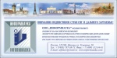 |
Последнее изменение страницы 6 Aug 2019
{kind=link}
{kind=link}
{kind=link}
{kind=link}
{kind=link}
{kind=link}
{kind=link}
{kind=link}
{kind=link}
{kind=link}
{kind=link}
{kind=link}
{kind=link}